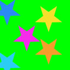

Testing images for use on Orange Radio grid
The aim of this test is to see if any image format renders the assets correctly with no scaling / distortion — it tests whether or not it is due to the scaling or the use of borders to introduce scaling.
A — Using PNG (lossless) images
A1 — Using 256px (API large) images scaled down to 120px with no border
A2 — Using 256px (API large) images scaled down to 118px with 1px grey border
A3 — Using 128px (API medium) images scaled down to 120px with no border
A4 — Using 128px (API medium) images scaled down to 118px with 1px grey border
A5 — Using 120px (created for test) with no border
A6 — Using 118px (created for test) with 1px grey border
B — Using JPG (80% quality) images
A1 — Using 256px (API large) images scaled down to 120px with no border
A2 — Using 256px (API large) images scaled down to 118px with 1px grey border
A3 — Using 128px (API medium) images scaled down to 120px with no border
A4 — Using 128px (API medium) images scaled down to 118px with 1px grey border
A5 — Using 120px (created for test) with no border
A6 — Using 118px (created for test) with 1px grey border
